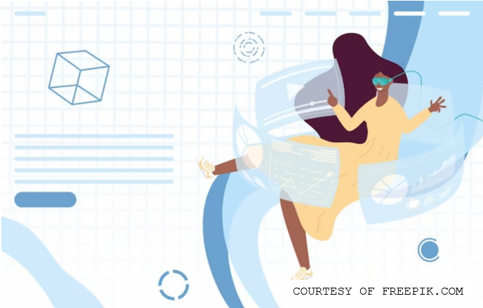

INTRODUCTION
Hi! My name is Hafiza and here is the site I have created in order to showcase some of my achievements and projects that I have accomplished over the years.
Even though I come from a family who are not in the world of technology, I have always been fascinated by computers and programming, hence why I decided to study these subjects since GCSE Level, going on to doing Computer Science and Mathematics at A Levels.
Anything to do with computers or programming in general fascinates me, but I would specifically like to develop a career in the games industry. This is because, not only does it involve a lot of programming, but it also has creative paths, which I also like to take an interest in.

Outside of tecchy-stuff, here are some of my other interests:
- anime
- drawing/digital art
- occassional reading
- baking/cooking
- candles/incense
- games of any sort
I hope this short introduction has given you an insight into my work and what I am interested in and what I wish to achieve, and I hope you enjoy looking at this site ! :D